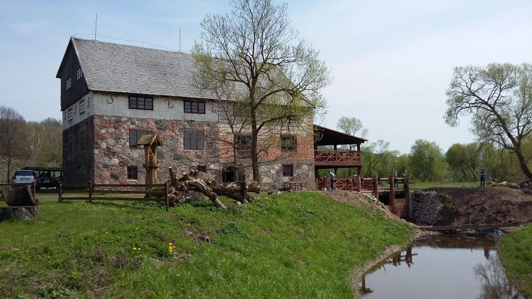

Welcome to vandens
Vežlių priežiūra - Vandens vėžliai
2020.10.27 07:36Vandens vėžliai Info: Pagrindinis Dovanojami Vėžliai Vėžlių ypatybės Vežlių priežiūra Reikalingas vivariumas Pamokos Foto albumas Forumas Apie eturtles
MAITINIMAS
Maitinti reikia anksčiausiai 1.5-2 val. nuo pradedant vėžliui šildytis arba mažiausiai 3-4 val. iki vėžlio šildymosi pabaigos, įrengtoje salelėje. Gyvas maistas
Galima suleisti gupijų,karosiukų, karpiukų, kardonešių, auksinių
žuvelių. Vasarą duoti žiogų (retai),
nenuodingų vabalų ir neplaukuotų vikšrų,
uodų lervų, sliekų. Galima
veisti miltinių kirminų. Retkarčiais galima
duoti laboratorinių pelių ir varlių. Būtina bent retkarčiais sumaitinti gyvas sraiges su
kiautu. Jas galima vartoti dažnai.
Liesa žuvis. Prieš patiekiant, ypač jei žuvis riebi, ją reikia kelias minutes palaikyti karštame (~80°C) vandenyje. Riebią žuvį galima duoti ne dažniau, kaip 1 kartą per savaitę. Patiekiant tokiu dažnumu, jos galima ir nelaikyti karštame vandenyje. Geriausia tinka ešerių šeimos žuvys, jūros lydeka, menkė. Žalią žuvį reikia duoti su kaulais: supjaustyti gabaliukais skersai, kad kiekviename gabaliuke būtų stuburas; su šonkauliais nemaitinti. Kaip priedą, galima duoti gabaliuką kalmaro arba krevetės, sraigių mėsą.
Mėsa. Galima maitinti liesa žalia arba virta mėsa. Tinka veršiena, arkliena, paukštiena. Literatūroje rašo, kad mėsą duoti tik retkarčiais, tačiau aš vos ne kasdien ją duodu, pažįstu žmogų, kuris augina vandens vėžlį ir jau 10 metų vėžlys auga tik ant įvairios mėsos. 1 kartą per savaitę galima duoti nedaug kepenų.
Žalumynai. Noriai valgo salotas, agurkus, apvirtus kopūstus (mažai), morkas, ropes, moliūgus, obuolius, pienių lapus, dilgėlių ir dobilų lapus, avižų ir miežių daigus, arbūzų žieves, vynuoges, mėlynes, spanguoles, avietes, gervuoges, melionus, persikus, abrikosus, inžirą. Daugiau apie tai ka mėgsta vėžliai anglų kalba čia.
Negalima duoti daug vienos rūšies daržovės ar vaisiaus. Negalima maitinti kalafiorais, grybais, ananasais, špinatais.
Sausas maistas
Tinka sausos dafnijos. Kaip priedą galima duoti kaulų miltų. taip pat galima maitinti komerciniu vandens vėžliams skirtu maistu. Vitaminai
Pageidautina retkarčiais duoti vitaminų “Turtle vit”. Vartoti tik aliejiniu pavidalu pagamintus vitaminus ir lašinti į maistą arba į vandenį. Jei per mažai D vitamino,gali minkštėti kaulas, o maži vėžliukai susirgti rachitu. Lašinti po 2 lašus per dieną. Šie skystos konsistencijos vitaminai taip pat stiprins jūsų augintinio imuninę sistemą. SVEIKATA
Norint sužinoti ar Jūsų augintinis yra sveikas atsižvelkite į sekančius rodiklius:Patikrinkite šarvą. Jis turi būti tvirtas ir nesužalotas.
Akys visuomet turi būti atmerktos, blizgančios, be traiškanų.
Nosis ir burna privalo būti sausos ir nesulipusios.
Išeinamoji anga turi būti švari, išmatos kietos, neaštriu kvapu.
Oda turi būti elastinga. Keliant vėžliuką jis turi išsigąsti ir priešintis, nebūti apatiškas.
Sveikas vėžliukas nesislėps nuolat savo slėptuvėje, bet plaukios pirmyn ir atgal, kad iššniukštinėtų savo vietovę, nes šie ropliai iš prigimties yra smalsūs.
LIGOS
Kiautas, Osteodistrofija.Priežastys gali būti labai įvairios, dažniausiai susijusios su mitybos pažeidimais. Kai vėžlių dietoje yra nepakankamas kiekis Ca, vit. D3, arba kai yra Ca ir P netinkamas santykis. Tada pradeda vytytis šarvo deformacija, jis minkštėja, atsiskiria nuo kaulų skydeliai, atsiranda dėmės. Tuomet reikia dietoje padidinti Ca ir vit.D3 kiekį bei naudoti ultravioletinių spindulių lempas (UVA, UVB). Kiauto pažeidimus, susijusius su medžiagų apykaitos sutrikimais, reikia diferencijuoti nuo grybelinių susirgimų, nes ligos požymiai, atsiradę kiaute, gali būti labai panašūs. Traumų atveju, kai vėžliai transportuojami ne pagal reikalavimus, sukraunami keliais sluoksniais vienas ant kito šarvo, taip pat gali atsirasti šarvo pažeidimų, galūnių sužalojimo požymių ir kartu vystytis grybelinės kilmės šarvo pažeidimai. Visais atvejais, jeigu pažeistas kiautas ir pastebėti grybelinės kilmės pažeidimai, reikia tas vietas plauti, ar merkti vėžlį į tirpalą 10-15 min., kuriame yra jodo (5-10% Betadyne) ir kt. Po to nusausinti šarvą ir naudoti antibiotikų tepalą. Sužeistiems vėžliams temperatūra aplinkoje turi būti ne žemesnė kaip 26-29 laipsniai. Jeigu tokie pažeidimai atsiranda vandens vėžliams, tai leisti jiems plaukioti vandens tirpale su jodu 30 minučių, po to nusausinti ir apdoroti pažeistas vietas antibiotikų tepalu (Amoxillin, Cephosporin ir kt.). Tuo laikotarpiu juos reikia maitinti pašaru, kuriame gausu multivitaminų priedų. Jeigu pažeisti šarvo skydeliai, juos reikia pašalinti. Odoje pažeistos vietos plaunamos vandenilio peroksido tirpalu ar jodo turinčiais tirpalais, nusausinama ir naudojama antibiotikų tepalai bei šiluma 26-29 laipsniai.
Akių pažeidimai.
Vėžlių akių ligos gali vystytis dėl:
Vitamino A trūkumo jų dietoje, neretai pažeidžiama ir ašarų liaukos.
Blogos vandens kokybės ir jo neatitikimo nustatytoms geriamojo vandens higienos normoms, kai vėžliai jame ilgai plaukioja.
Svetimkūnių įstrigimo akių sluoksniuose.
Bakterijų infekcijos.
Trūkstant vėžlių dietoje vitamino A, pažeidžiama akių optinė ir neretai receptorinė dalis, atsiranda ištakos net ir iš nosies. Svarbu, kad jų pašaruose netrūktų vitamino A. Jį nerekomenduojama vėžliams įšvirkšti, bet geriau praturtinti juo pašarus. Pasitaikė atvejų, kad vitamino A įšvirkštimas sukėlė neigiamas pasekmes vėžliams. Šį vitaminą dozuojant, reikia atsižvelgti ne tik į vėžlio svorį, bet ir šarvo matmenis.Vėžliams bakterijos dažniausiai sukelia ragenos pažeidimus, kurie apima ir akies obuolį. Neretai pažeidžiami vokai, atsiranda jų paraudimas. Bakterijos dauginasi vandenyje, kuriame plaukioja vėžliai, jei nesilaikoma vandens keitimo rėžimo ir jo filtravimo reikalavimų. Minėtu atveju vėžlių akių gydymui naudojami akių lašai (Gentamycin, Neomycin, kuriuose yra veiklioji medžiaga Chloamphenicol). Vėžlius, kuriems taikytos akių gydymo procedūros, reikia 45 minutes laikyti sausai ir po to grąžinti į švarų vandenį. Vėžlius su akių pažeidimais rekomenduojama laikyti atskirai nuo kitų spec. konteineryje, akvariume ar kitur, kur temperatūra būtų 26-29 laipsniai. Gydymą akių lašais kartoti du kartus paroje.
Kvėpavimo takų ligos.
Požymiai: iš nosies tekančios išskyros, kosėjimas, čiaudėjimas, kvėpavimas atvėrus plačiai burną, pneumonijos vystymasis. Plaučių uždegimas gali vystytis ūmia ir lėtine forma. Lėtinė forma diagnozuojama taikant rentgeną. Gydymas antibiotikais - Enrofloxacin (Baytril), Ampicilin 50/70 mg/kg 7 dienas, Gentamycin 5/10 mg/kg iki 10 dienų su 48 val. Intervalais, mityboje naudoti multivitaminų priedus, šildymą aplinkos infraraudonųjų spindulių lempomis, vitamino C terapiją, temperatūros režimą 26-29 laipsniai.
Burnos ligos
Dažniausiai pasitaiko nekrotizuojantis stomatitas (burnos puvinys), kurio metu pažeidžiami žandikauliai, jie auga neproporcingai. Pažeistas sritis rekomenduojama plauti vandenilio peroksidu, jodo turinčiais tirpalais, taikyti antibiotikų terapiją per os, skirti vitaminų B kompleksą 0,25-0,75 mg/kg ir vitamino C 10-20 mg/kg kasdien.
Metabolizmo sutrikimai.
Jie gali būti susiję su Ca, P, vit. D apykaita, su mažu ląstelienos kiekiu maiste. Jeigu vėžlių racione trūksta ląstelienos, pasireiškia žarnyno blokada, konstipacija (išmatų susilaikymas). Rekomenduojama nutraukti jų maitinimą pramoniniais pašarais ir 7-10 dienų naudoti daugiau ląstelienos turinčių pašarų. Pašarą prieš šėrimą 30-45 minutes reikia laikyti konteineryje, kurį supa šiltas vanduo. Kitas būdas vandens vėžliui padėti pašalinti išmatas, jį pamerkti į šiltesnį vandenį lyginant su kasdien naudojamu, kad sutiprėtų žarnyno motorinė veikla. Jeigu po procedūros išmatos nepasišalina, o vėžlys turi apetitą, reikia šilto vandens procedūros taikymą pakartoti po 5 valandų pertraukos. Priešingas reiškinys konstipacijai (išmatų susilaikymas) gali būti vėžlių viduriavimas. Tada sumažėja jų apetitas, vystosi dehidratacija, atsiranda vėmimas, neretai su kirmėlėmis. Tik atlikus fekalijų mikroskopinį tyrimą, nustatoma tiksli helmintų charakteristika. Nerekomenduojama vėžlių gydymui naudoti Ivermectin, nes šis antiparazitinis vaistas jiems toksiškas ir sukelia mirtį. Naikinti žarnyno parazitus taikoma Oxfendazole ar Metronidazole (kaspinuočio, trematodų ir nematodų naikinimui). Naikinant žarnyno parazitus, dažniausiai pažeidžiama žarnyno bakterijų galimybė sintezuoti vitaminą K ir pasireiškia šio vitamino trūkumas organizme. Jį galima pašalinti naudojant vitaminą K 23 mg/453,6 g svorio ir pakartoti gydymą po 14 dienų, taikyti daržovių dietą bei 7-10 dienų naudoti varškę. Pagal mokslininkų (Kaplan M., Jereb R. 1995), tyrinėjusių vėžlių organizmą, rekomendacijas, vėžlių gydymui siūlomi šie antibiotikai – Carbenicillin 200 mg/kg į raumenis (48 val. veikimas sausumos vėžliams), Gentamicin 6 mg/kg į raumenis vandens vėžliams (raudonausiams), Ampicilin 4 mg/kg į raumenis (Guržij A.N.1999). Galima vaistus suduoti ir girdant per vamzdelį švirkštu. Gydyti tetraciklinu nepatartina, nes sukelia žarnų opas, gali atsirasti kraujavimo požymių.
PAGRINDINĖS VANDENS VĖŽLIŲ AUGINTOJŲ KLAIDOS
1. Negalima laikyti vėžlio akvariume,nesant akvariume sausumos salelei. Vėžlys gali nuskęsti, nepaisant to, kad jis yra vandens vėžlys.2. Negalima laikyti vėžlio be šildymo.
3. Mityboje negali būti vien tik žalia mėsa.
4. Negalima maitinti vien tik augaliniu maistu.
5. Jeigu vėžlys negauna maisto, kuriame gausu kalcio (žuvys su ašakomis, sraigių), būtina duoti mineralų papildų.
6. Negalima į pašarus dėti aliejinių vitaminų "iš akies".
7. Negalima laikyti vėžlių į purviname vandenyje, ypač jei susidaro ant paviršiaus plėvelė.
8. Jeigu vėžlys apaugęs dumbliais, negalima jo valyti šiurkščiu šepečiu ,nes pavojinga pašalinti per daug raginės plokštelės.
9. Negalima akvariume turėti keleto patinų, o taip pat negalima įleisti naujų gyvūnų be įžanginio karantino.
10. Negalima naudoti tralams ir salelėms tik slidžių medžiagų (stiklo, plastmasės),
11. Neplaukite akvariumo virtuvėje ir nenaudokite indų vėžliams, kurie naudojami žmonių maistui.
12. Norėdami nugabenti vėžliuką pas gydytoją, naudokite lininį maišelį. Akvariume vėžliui vanduo greitai atšals. Be to, vandens vėžliai gali normaliai apsieiti be vandens iki 2 savaičių.
Klausimai ir nuomonės: gladturtles@gmail.com, © since 2010 eturtlez.tk
Powered by Create your own unique website with customizable templates. Get Started
